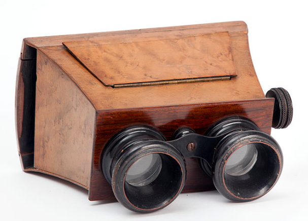

1840
Camera is the image-forming device, and a photographic plate, photographic film or a silicon electronic image sensor is the capture medium. The respective recording medium can be the plate or film itself, or a digital magnetic or electronic memory.
1870
Stereoscopy is the production of the illusion of depth in a photograph, movie, or other two-dimensional image by the presentation of a slightly different image to each eye, which adds the first of these cues (stereopsis). The two images are then combined in the brain to give the perception of depth.
1938
Xerography or electrophotography is a dry photocopying technique. Its fundamental principle was invented by American physicist Chester Carlson and based on Hungarian physicist Pál Selényi's publications.The technique was originally called electrophotography. It was later renamed xerography—from the Greek roots ξηρός.
Late 1950s
Full-spectrum is a subset of multispectral imaging, defined among photography enthusiasts as imaging with consumer cameras the full, broad spectrum of a film or camera sensor bandwidth. In practice, specialized broadband/full-spectrum film captures visible and near infrared light, commonly referred to as the "VNIR".
Early 1990s
Light field camera: Besides the camera, other methods of forming images with light are available. For instance, a photocopy or xerography machine forms permanent images but uses the transfer of static electrical charges rather than photographic medium, hence the term electrophotography.
2000
Dual-photography consists of photographing a scene from both sides of a photographic device at once.The dualphoto apparatus can be used to simultaneously capture both the subject and the photographer, or both sides of a geographical place at once, thus adding a supplementary narrative layer to that of a single image.